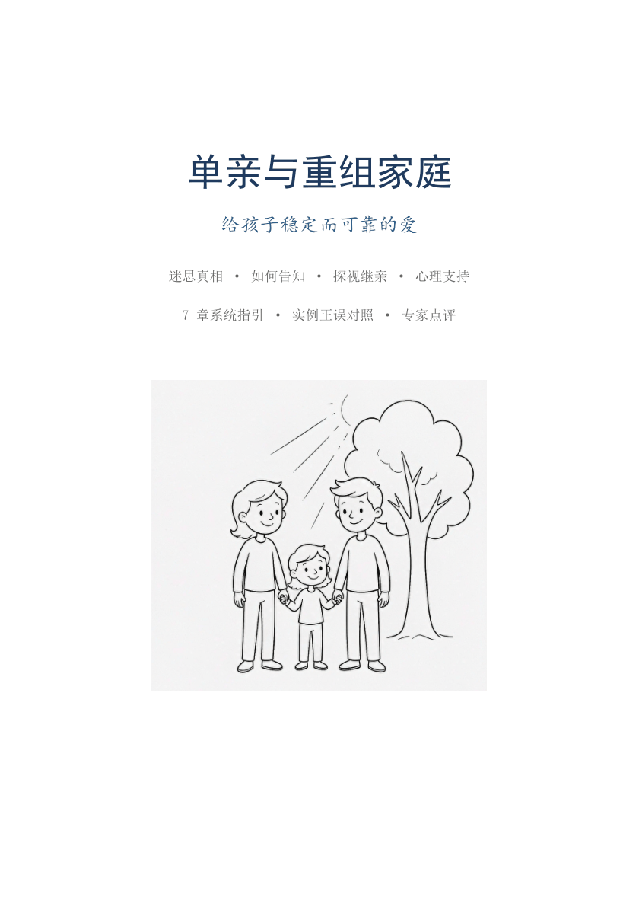
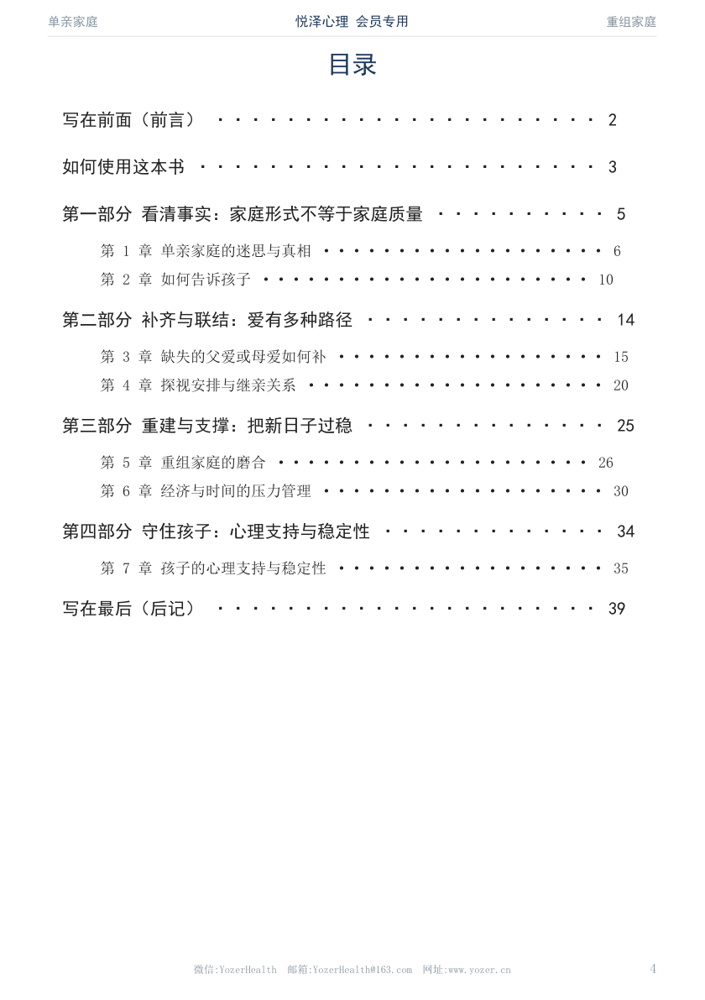
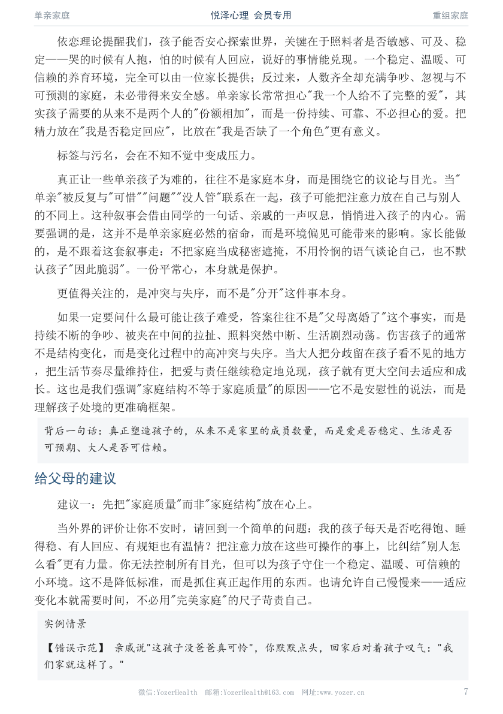
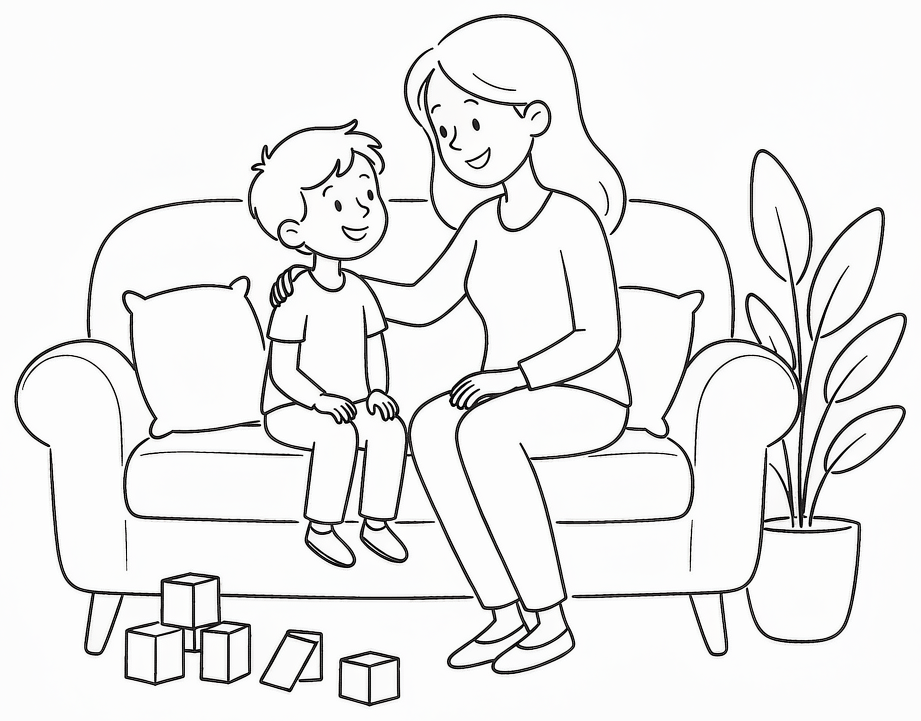

01
看清事实
2 章单亲家庭的迷思与真相、如何告诉孩子——先破除“不完整”的偏见。
——给孩子稳定而可靠的爱
"我们家跟别人不一样。"这本书想告诉孩子和家长：家庭形式不等于家庭质量。它去标签化、不评判，从迷思与真相、如何告诉孩子，到探视与继亲关系、重组家庭磨合，最后落到孩子的心理支持与稳定性——稳定、温暖、可信赖的养育环境，才是关键。

封面与内页样张来自电子书原稿
翻开这本书之前，先听听作者想说什么
"我们家跟别人不一样。"
"我爸爸是不是不要我了？"
"我能不能也叫她妈妈？"
这些话，单亲家庭的父母和重组家庭的家长，几乎都听过。问的人小心翼翼，听的人心里一紧。在很多人的潜意识里，"单亲"两个字似乎总带着一点遗憾，"重组"两个字又总藏着说不清的别扭。社会上有太多善意的、或者不那么善意的眼光，把这类家庭归进"特殊"的那一栏。
这本书想从一开始就说明白一件事：家庭的形式，从来不等于家庭的质量。一个家的好坏，不在于门牌后面住着几个人，而在于里面有没有稳定的爱、清楚的边界、可信赖的大人。单亲家庭同样能养出安全感十足、内心有力量的孩子；重组家庭也一样能长出新式的、牢固的亲情。这不是安慰话，而是无数家庭的真实经历。
当然，我们不想回避难处。一个人带孩子，要同时扛起生计与养育，要回答孩子一个又一个尖锐的问题，要处理与前伴侣、与新伴侣、与孩子之间千丝万缕的关系——这些辛苦是真实的，疲惫和委屈也是真实的。这本书不打算用"你很坚强"这类话把您架起来，而是想陪您把一件件具体的事理清楚：
第一，先卸下不必要的包袱。单亲不是孩子的伤疤，也不该是您的原罪。第 1 章会把那些流传很广的迷思一条条摆出来、说清楚，让您先松一口气。
第二，把最难开口的话，变成能说的话。怎么告诉孩子父母分开了？怎么回答"爸爸为什么不回来"？第 2 章给出分龄、具体、可以直接用的话术。
第三，正视关系里的难题。缺席的一方怎么办？探视如何安排？继父母怎么称呼、管到什么程度？继兄弟姐妹如何相处？第 3 至第 5 章逐一拆解。
第四，也请您照顾好自己。时间不够、钱不够、精力不够，是单亲家庭最现实的困境；重组家庭又有自己的磨合成本。第 6 章谈压力管理，第 7 章谈孩子的心理支持，也谈及您自己的情绪与求助。
全书每一章都有生活场景、正误对照的实例和一张速查表，方便您在疲惫时随手翻看。语言尽量克制、温暖，不评判任何一种选择——无论是离婚、独自抚养，还是带着孩子重新组建家庭，那多是成年人在复杂现实里做出的选择，值得被尊重。
愿每一个孩子，无论生活在哪种家庭里，都能稳稳地被爱着长大；愿每一位独自支撑或正在重建的大人，都被这份书页温柔地托一下。
按“看清事实—补齐联结—重建支撑—守住孩子”四部分编排，去标签化、不评判
单亲家庭的迷思与真相、如何告诉孩子——先破除“不完整”的偏见。
缺失的父爱或母爱如何补、探视安排与继亲关系——爱有多种路径。
重组家庭的磨合、经济与时间的压力管理——把新日子过稳。
孩子的心理支持与稳定性——允许哀伤，不要求“懂事坚强”，留意需要求助的信号。
统一的章节结构，不渲染悲情、不道德评判，给出稳妥可行的建议
场景化开场，让你觉得“这说的就是我家孩子”
讲清行为背后的心理与发育规律，不焦虑不指责
每条配一个实例情景，含错误示范与正确示范
点破常见误区，避免“越管越糟”
从专业角度收束，讲清原理与边界
7 章 · 附真实页码 · 点击上方按钮可快速跳转试读
以下为第 1 章完整节选，看如何正面破除单亲家庭的迷思
"妈妈，为什么别的同学有爸爸来参加运动会，我没有？"晚餐时，八岁的乐乐突然放下筷子这样问。妈妈的手微微一顿。她独自带乐乐两年多了，日子忙乱，却也渐渐安稳：作业有人陪，睡前故事没断过，生病时有人整夜守着。可这一句童言，还是让她心里发紧。她想起前几天乐乐从学校回来闷闷不乐，说有同学问他"你是不是没人要了"，他回了一句"我有妈妈"，转头却红了眼眶。那晚妈妈没有急着解释，只是把孩子搂紧了些。其实乐乐的生活并没有因为父母分开而少掉什么——稳定的作息、可预期的陪伴、遇到困难可以随时倾诉的妈妈，都在。可外界的眼光、偶尔安静的角落，仍会让这对母子隐隐不安：我们这样，算不算"不正常"？
把"结构"当成"质量"，是一场普遍的误读。
人们习惯用一个家庭的"形状"来判断它好不好：几个人、父母是否住在一起、亲戚是否来往密切。可越来越多的发展视角，把注意力从"家里有什么人"转向"家里发生了什么"。孩子过得怎么样，更多取决于日常里那些反复出现的东西——有人及时回应他的哭闹，有人记得他怕黑，有人在他考砸时依然站在他这边。这些与户口本上的栏数无关。把"单亲"直接等同于"不完整"，是把一个关于生活安排的事实，误当成了对孩子命运的判决。结构只是一种安排，而生活的质量，藏在每一天具体的相处里。
孩子的安全感，来自"可信赖的照料"，而非照料者的数量。
依恋理论提醒我们，孩子能否安心探索世界，关键在于照料者是否敏感、可及、稳定——哭的时候有人抱，怕的时候有人回应，说好的事情能兑现。一个稳定、温暖、可信赖的养育环境，完全可以由一位家长提供；反过来，人数齐全却充满争吵、忽视与不可预测的家庭，未必带得来安全感。单亲家长常常担心"我一个人给不了完整的爱"，其实孩子需要的从来不是两个人的"份额相加"，而是一份持续、可靠、不必担心的爱。把精力放在"我是否稳定回应"，比放在"我是否缺了一个角色"更有意义。
标签与污名，会在不知不觉中变成压力。
真正让一些单亲孩子为难的，往往不是家庭本身，而是围绕它的议论与目光。当"单亲"被反复与"可惜""问题""没人管"联系在一起，孩子可能把注意力放在自己与别人的不同上。这种叙事会借由同学的一句话、亲戚的一声叹息，悄悄进入孩子的内心。需要强调的是，这并不是单亲家庭必然的宿命，而是环境偏见可能带来的影响。家长能做的，是不跟着这套叙事走：不把家庭当成秘密遮掩，不用怜悯的语气谈论自己，也不默认孩子"因此脆弱"。一份平常心，本身就是保护。
更值得关注的，是冲突与失序，而不是"分开"这件事本身。
如果一定要问什么最可能让孩子难受，答案往往不是"父母离婚了"这个事实，而是持续不断的争吵、被夹在中间的拉扯、照料突然中断、生活剧烈动荡。伤害孩子的通常不是结构变化，而是变化过程中的高冲突与失序。当大人把分歧留在孩子看不见的地方，把生活节奏尽量维持住，把爱与责任继续稳定地兑现，孩子就有更大空间去适应和成长。这也是我们强调"家庭结构不等于家庭质量"的原因——它不是安慰性的说法，而是理解孩子处境的更准确框架。
建议一：先把"家庭质量"而非"家庭结构"放在心上。
当外界的评价让你不安时，请回到一个简单的问题：我的孩子每天是否吃得饱、睡得稳、有人回应、有规矩也有温情？把注意力放在这些可操作的事上，比纠结"别人怎么看"更有力量。你无法控制所有目光，但可以为孩子守住一个稳定、温暖、可信赖的小环境。这不是降低标准，而是抓住真正起作用的东西。也请允许自己慢慢来——适应变化本就需要时间，不必用"完美家庭"的尺子苛责自己。
建议二：用平常心谈论家庭，不把"单亲"当成秘密。
孩子对大人的语气极其敏感。如果你一提起家庭就躲闪、羞愧或愤怒，孩子会学到"这件事见不得人"。更稳妥的做法是，用简单、如实、不带情绪的语气谈："爸爸妈妈分开了，这是大人的安排，和你的生活没关系。"不必主动向所有人解释，也不必在每个场合强调自己的身份。当孩子从你这里听到的是平静与笃定，他就更可能用同样平常的眼光看自己。坦然不是强撑，而是让孩子知道：我们的家庭值得被尊重。
建议三：用稳定的作息与仪式，撑起孩子的"可预期感"。
变化越多，孩子越需要"不变"的东西。尽量保留固定的起床、吃饭、作业、睡觉时间，留下睡前故事、周末散步这些小仪式。它们像一根根小小的锚，让孩子在变动中仍感到"日子是有秩序的，明天是可以期待的"。仪式不必隆重，贵在稳定；偶尔打乱也没关系，事后接上就好。你已经很不容易，不必把每一天都安排得滴水不漏——大方向稳定，就足以给孩子力量。
建议四：为孩子搭建多元、稳定的支持关系。
一个孩子健康成长，从来不需要把所有情感都压在一个人身上。在安全、可信赖的前提下，帮助孩子与亲戚、老师或值得信任的成年朋友建立联系，让他的世界里有几位"靠得住的大人"。这既能分担你的压力，也让孩子明白：爱他的不止一个来源。寻求帮助不是示弱，而是给孩子更丰富的支持网络。选择人时要谨慎，以孩子的安全和舒适为前提。
默认孩子"因此有问题"：先入为主的担心会变成暗示，让孩子也这么看自己。
把家庭当成秘密遮掩：越躲闪，孩子越容易觉得这件事羞耻、不可谈论。
用怜悯语气谈论自己："我一个人多不容易"说多了，孩子会背负不该有的愧疚。
拿"完整家庭"的尺子苛求自己：试图补齐所有角色，反而耗竭了自己、乱了节奏。
把外界偏见当事实接受：别人说"单亲孩子都难管"，不必认同，更不必对孩子复述。
谈单亲家庭，最需要先把一个判断摆正：家庭结构只是生活的一种安排，它既不预示孩子的问题，也不定义孩子的未来。真正影响孩子成长的，是每天能否被稳定地回应、被温柔地对待、被可靠地守护。把"家庭结构不等于家庭质量"放进心里，家长就能从不必要的自责与外界的目光中松一口气，把力气用在最值得的地方——维持稳定的作息、温暖的互动、可信赖的关系。请允许自己不那么完美：一个稳定、温暖、可信赖的养育环境，足以支撑孩子好好长大。如果孩子出现持续的情绪低落、明显的退缩或攻击、睡眠饮食的显著变化，建议寻求专业儿童心理帮助；若出现自伤或伤害他人的紧迫风险，应立即就医或拨打急救电话，不要独自硬扛。孩子需要的，从来不是一副完美的家庭外壳，而是那份始终在场、始终可靠的爱。
—— 以上为节选，完整内容见电子书 ——
真实排版预览 · A5 竖版 · 黑白简笔画插图



图片为文档内嵌样张，仅作版式展示
| 项目 | 说明 |
|---|---|
| 书名 | 单亲与重组家庭 |
| 副标题 | 给孩子稳定而可靠的爱 |
| 读者对象 | 单亲与重组家庭 |
| 篇幅 | 7 章 · 约 2.8 万字 · 39 页 |
| 版本 | A5 版（148×210mm） |
| 格式 | PDF 电子书 |
| 插图 | 8 张黑白简笔画题图 |
| 结构 | 四部分 · 每章五步 · 实例正误对照 |